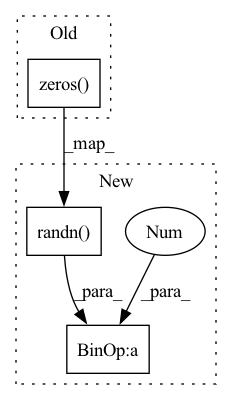

Pattern ID :15408

Before Change
super().__init__()
self.output_dim = output_dim
self.t_param = torch.nn.Parameter(torch.zeros(output_dim),requires_grad = True)
self.sigma = torch.nn.Parameter(torch.ones(1),requires_grad = True)
def forward(self,x):
After Change
self.output_dim = output_dim
self.t_param = torch.nn.Parameter(
torch.randn(output_dim)*0.1, requires_grad=True)
self.sigma = torch.nn.Parameter(torch.ones(1), requires_grad=True)
def forward(self, x):
In pattern: SUPERPATTERN
Frequency: 3
Non-data size: 3
Instances
Fragment ID: 52289007
Project Name: borgwardtlab/togl
Commit Name: 9fccd13dedaed47d541891435f9bdc2574973ca7
Time: 2021-02-03
Author: max.horn@bsse.ethz.ch
File Name: topognn/coord_transforms.py
M Class Name: Gaussian_transform
N Class Name: Gaussian_transform
M Method Name: __init__(2)
N Method Name: __init__(2)
M Parent Class: nn.Module
N Parent Class: nn.Module
M File Name: topognn/coord_transforms.py
N File Name: topognn/coord_transforms.py
M Start Line: 56
M End Line: 56
N Start Line: 61
N End Line: 61
'>
Before Change
self.output_dim = output_dim
self.c_param = torch.nn.Parameter(torch.zeros(2,output_dim),requires_grad = True)
self.r_param = torch.nn.Parameter(torch.zeros(1,output_dim),requires_grad = True)
def forward(self,x):
After Change
self.c_param = torch.nn.Parameter(
torch.randn(2, output_dim)*0.1, requires_grad=True)
self.r_param = torch.nn.Parameter(
torch.randn(1, output_dim)*0.1, requires_grad=True)
def forward(self, x):
'>
Fragment ID: 52289009
Project Name: borgwardtlab/togl
Commit Name: 9fccd13dedaed47d541891435f9bdc2574973ca7
Time: 2021-02-03
Author: max.horn@bsse.ethz.ch
File Name: topognn/coord_transforms.py
M Class Name: RationalHat_transform
N Class Name: RationalHat_transform
M Method Name: __init__(2)
N Method Name: __init__(2)
M Parent Class: nn.Module
N Parent Class: nn.Module
M File Name: topognn/coord_transforms.py
N File Name: topognn/coord_transforms.py
M Start Line: 105
M End Line: 106
N Start Line: 111
N End Line: 113
'>
Before Change
super().__init__()
self.output_dim = output_dim
self.t_param = torch.nn.Parameter(torch.zeros(output_dim),requires_grad = True)
def forward(self,x):
After Change
self.output_dim = output_dim
self.t_param = torch.nn.Parameter(
torch.randn(output_dim)*0.1, requires_grad=True)
def forward(self, x):
'>
Fragment ID: 52289010
Project Name: borgwardtlab/togl
Commit Name: 9fccd13dedaed47d541891435f9bdc2574973ca7
Time: 2021-02-03
Author: max.horn@bsse.ethz.ch
File Name: topognn/coord_transforms.py
M Class Name: Triangle_transform
N Class Name: Triangle_transform
M Method Name: __init__(2)
N Method Name: __init__(2)
M Parent Class: nn.Module
N Parent Class: nn.Module
M File Name: topognn/coord_transforms.py
N File Name: topognn/coord_transforms.py
M Start Line: 14
M End Line: 14
N Start Line: 16
N End Line: 16